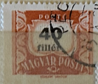
| SOURCE | TITLE| IMAGE MATCH | click to source page |
| eBay | Elizabeth II (1952-2022) Era 1 Number Hungarian Stamps for sale | eBay | 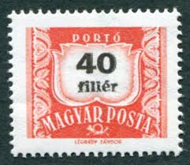 |
| HipStamp | Hungary 1958 Sc#J239, SG#D1509 40f Red Postage Due USED. | Europe - Hungary, Postage Due Stamp / HipStamp | 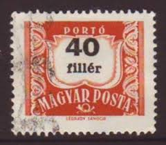 |
| eBay | Cultures, Ethnicities Used Hungarian Stamps for sale | eBay | 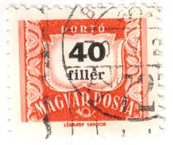 |
| HipStamp | Hungary, Scott#J241, Magyar Posta, Hungry used, Hr, #J241 | Europe - Hungary, Postage Due Stamp / HipStamp | 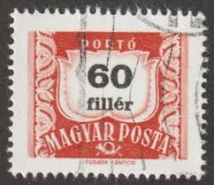 |
| eBay UK | Postage Due Hungarian Stamps for sale | eBay UK | 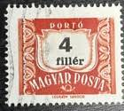 |
| eBay | Las mejores ofertas en Estampillas de Europa Franqueo naranja | eBay | 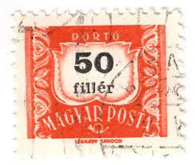 |
| eBay | Hungary Stamp 6 Filler 1958 Magyar Posta #007 | eBay | 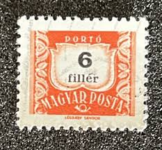 |
| HipStamp | Hungary #J251 - Used - 1965 - Hung157 | Europe - Hungary, Postage Due Stamp / HipStamp | 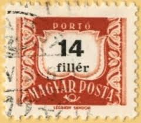 |
| HipStamp | Hungry, Scott#J230, Magyar Posta, Hungry used, Hr, #J230 | Europe - Hungary, Postage Due Stamp / HipStamp | 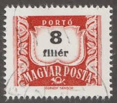 |
| Shutterstock | Hungary Circa 1958 Post Stamp Printed Stock Photo 606664358 | Shutterstock | 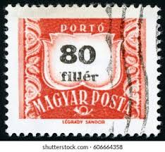 |
| HipStamp | Hungary #J250 - Used - 1965 - Hung156 | Europe - Hungary, Postage Due Stamp / HipStamp | 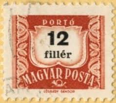 |
| allnumis.com | Stamps Catalog - List of stamps for Misc, Hungary - page 3 | 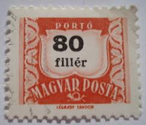 |
| iStock | 70+ Red Hungarian Postage Stamp Stock Photos, Pictures & Royalty-Free Images - iStock | 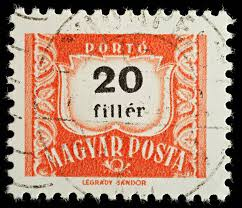 |
| Pixers | Canvas Print Numeric value stamp (Hungary 1958) - PIXERS.CA | 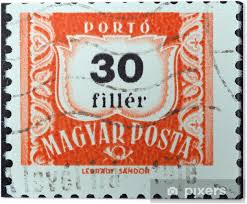 |
| HipStamp | Hungary #J252 - Used - 1965 - Hung158 | Europe - Hungary, Postage Due Stamp / HipStamp | 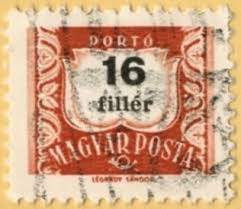 |
| HipStamp | Hungry, Scott#J233, Magyar Posta, Hungry used, Hr, #J233 | Europe - Hungary, Postage Due Stamp / HipStamp | 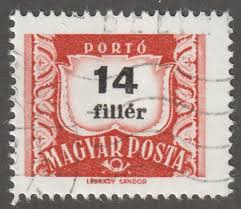 |
| allnumis.com | 16 Filler - Postage due (Porto), Misc - Hungary - Stamp - 47859 | 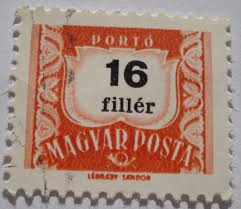 |
| Shutterstock | Hungary Circa 1947 Stamp Printed By Foto de stock 91619900 | Shutterstock | 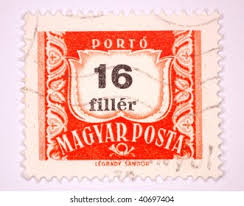 |
| eBay | Magyar Posta 60 Stamp | eBay | 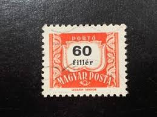 |
| HipStamp | J228 - numeral | Europe - Hungary, Postage Due Stamp / HipStamp | 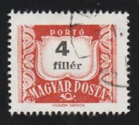 |
| stampsandstuff.net | Stamps from Hungary 1960-1969 | 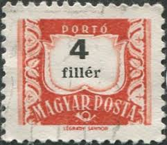 |
| HipStamp | Hungary 1958 - U - Scott #J239 | Europe - Hungary, Postage Due Stamp / HipStamp | 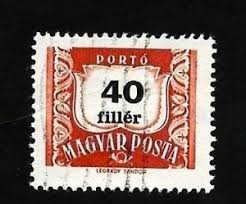 |
| Miraheze | Hungary – postage due issues - Stamp Encyclopedia | 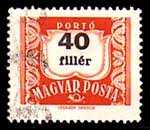 |
| iStock | Stamp Printed In Hungary Shows Image Of The Parliament House Stock Photo - Download Image Now - iStock | 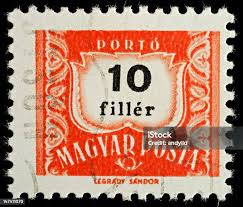 |
| eBay | Preços baixos em Selos postais usado devido Húngaro | eBay | 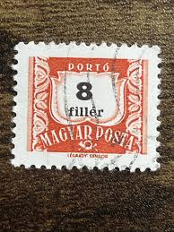 |
| eBay | Las mejores ofertas en Negro usado Franqueo estampillas europeas | eBay | 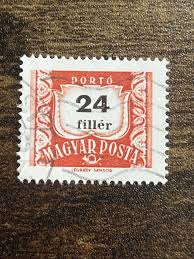 |
| SlideServe | PPT - History of the Magyars PowerPoint Presentation, free download - ID:1783173 | 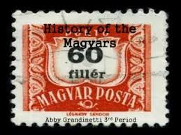 |
| Poppe Stamps | Poppe Stamps: Hungary, 1958, D1506, Postage Due Stamps, Posthorn - stamps for sale by theme and country | 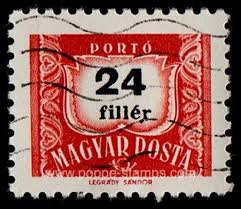 |
| Mudah.my | Stamp @ Magyar Posta 40 Filler - Hobby & Collectibles for sale in Setiawangsa, Kuala Lumpur | 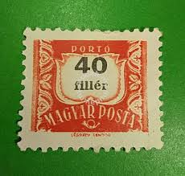 |
| Alamy | HUNGARY - CIRCA 1958: A stamp printed in Hungary, is depicted porto-mark, a shield, face value 50 filler, circa 1958 Stock Photo - Alamy | 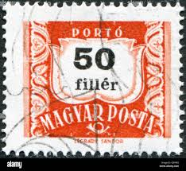 |
| Poppe Stamps | Poppe Stamps: Hungary, 1958, D1510, Postage Due Stamps, Posthorn, Postage Due Stamps, Posthorn - stamps for sale by theme and country | 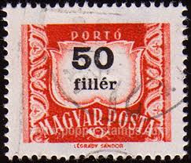 |
| Etsy | Hungary Postage Due Stamp Set 1922 to 1965 Coat of Arms Post Horn Anniversary - Etsy Canada |  |
| Shutterstock | 20+ Thousand 1965 Royalty-Free Images, Stock Photos & Pictures | Shutterstock | 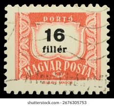 |
| eBay | Used Postage Due Hungarian Stamps for sale | eBay | 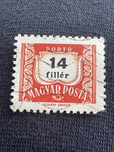 |
| eBay | Preços baixos em Selo magyar posta | eBay | 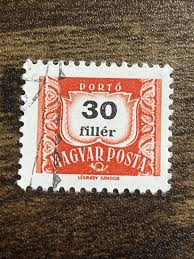 |
| Shutterstock | 16,674 Hungary Postage Stamp Royalty-Free Images, Stock Photos & Pictures | Shutterstock | 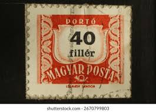 |
| iStock | Hungary Postage Stamp Stock Photo - Download Image Now - Black Background, Collection, Communication - iStock | 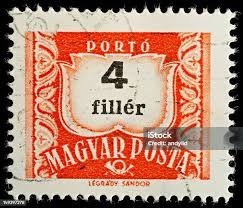 |
| Shutterstock | Hungary Circa 1958 Post Stamp Printed Stock Photo 606664406 | Shutterstock | 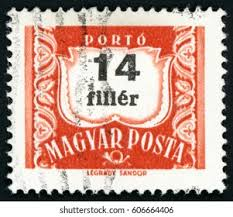 |
| Find Your Stamps Value | Value of Porto 4 fillér stamps | 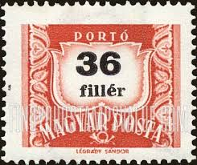 |
| Shutterstock | 3+ Thousand Magyar Posta Royalty-Free Images, Stock Photos & Pictures | Shutterstock | 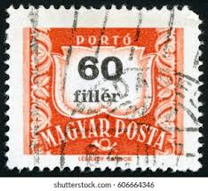 |
| Wikipedia | Postage stamps and postal history of Hungary - Wikipedia | 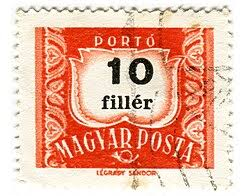 |
| Find Your Stamps Value | Value of posta romana porto 50b stamps | 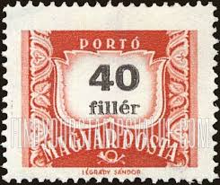 |
| iStock | Hungary Postage Stamp Stock Photo - Download Image Now - Black Background, Collection, Communication - iStock | 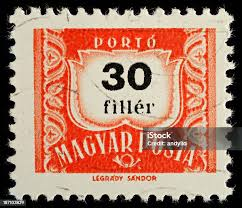 |
| Flickr | Magyar Posta/ Hungary stamps | Check out my STAMP BLOG for m… | Flickr | 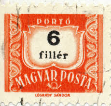 |
| Shutterstock | Value Red Stamp: Over 603 Royalty-Free Licensable Stock Photos | Shutterstock | 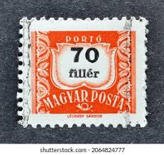 |
| HipStamp | Hungary, Scott#J257, Magyar Posta, Hungary used, Hr, #J257 | Europe - Hungary, Postage Due Stamp / HipStamp | 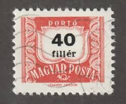 |
| ProBoards | CTOs and what to do with them? | The Stamp Forum (TSF) | 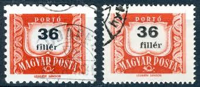 |
| Shutterstock | Hungary Circa 1958 Post Stamp Printed Stock fotografie 606664364 | Shutterstock | 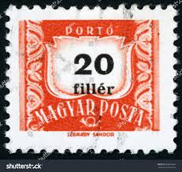 |
| HipStamp | Hungary #J231 10f Numeral | Europe - Hungary, Postage Due Stamp / HipStamp | 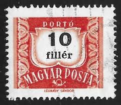 |
| Shutterstock | 3+ Thousand "magyar Posta" Royalty-Free Images, Stock Photos & Pictures | Shutterstock | 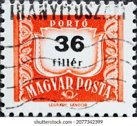 |
| eBay | 🍁 1929 postage due J2 large marking 1c Orange Admiral post card Canada | eBay | |
| Shutterstock | Hungary Circa 1958 Stamp Printed Hungary Stock Photo 90524911 | Shutterstock | |
| Shutterstock | 1+ Thousand "postage Due Stamps" Royalty-Free Images, Stock Photos & Pictures | Shutterstock | |
| Alamy | Cancelled postage stamp printed by hungary hi-res stock photography and images - Alamy | |
| Alamy | HUNGARY - CIRCA 1958: A stamp printed in Hungary, is depicted porto-mark, a shield, face value 40 filler, circa 1958 Stock Photo - Alamy | |
| stamplibrary.info | Hungary (Magyar Posta) Archive - Stamp Library | |
| Shutterstock | Hungary Circa 1958 Hungarian Used Postage Stock Photo 72056512 | Shutterstock | |
| Shutterstock | Hungary Circa 1958 Stamp Printed Hungary Stock Photo 222917743 | Shutterstock | |
| Shutterstock | 5+ Hundred Hungarian Post Sign Royalty-Free Images, Stock Photos & Pictures | Shutterstock | |
| Shutterstock | Porto Stamp: Over 461 Royalty-Free Licensable Stock Photos | Shutterstock |